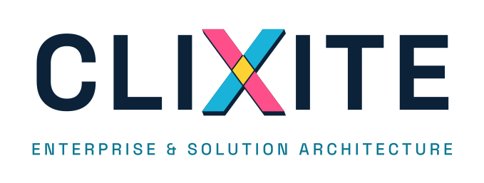

Brouillon à valider avant envoi
Enterprise & Solution Architect, Forward Deployed Engineer
nicolas@clixite.be, linkedin.com/in/nicolassim, Wavre (Belgique). Français, anglais, néerlandais opérationnel.
Disponible pour une nouvelle mission à partir de novembre 2026

Architecte qui conçoit puis met en production : achats, risques tiers, conformité DORA et NIS2, architecture et IA. Deux entreprises créées et cédées, puis huit ans dans les grands comptes : la vitesse d’un entrepreneur, la rigueur d’un grand groupe.
KBC Bank & Insurance, Expert Procurement et TPRM Advisor auprès du CPO 2025 à 2026, 18 mois
P&V Assurances et Vivium, Head of Procurement par intérim janvier à mi-2025
Proximus, Procurement Lead 2022 à 2024
Proximus, Senior Program Manager, domaine TV 2018 à 2022
PME via Clixite : Design Plus (charte, site, visibilité IA, HubSpot), groupe Tero (site et back-office) en cours
PMP, PRINCE2, AgilePM, SAFe, Scrum, ITIL v3, ADKAR
Marketing et communication, EPHEC Louvain-la-Neuve (2006)
Régie à temps plein ou partiel, forfait à livrable, temps partagé. En direct ou via cabinet référencé. Bruxelles, Wallonie, Flandre, Luxembourg.